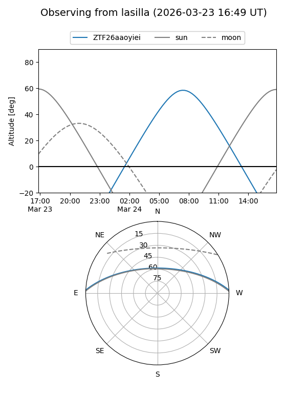
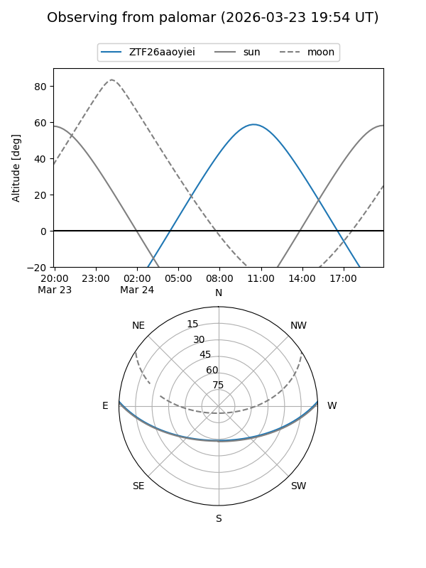

ZTF26aaoyiei
Target ZTF26aaoyiei at 2026-03-23 12:29
Aliases and brokers:
FINK: link
Lasair: link
ALeRCE: link
alt names
ZTF26aaoyiei (ztf,fink_ztf)
Coordinates:
equatorial (ra, dec) = 221.9082,+2.31686
equatorial (HMS+DMS) = 14:47:37.96,+02:19:00.68
galactic (l, b) = (356.1791,+52.73387)
Flags:
Photometry:
last ztfg=19.28
1 ztfg detections
Lightcurve
Visibility


Additional plots